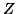

Next: Elementary Stages Box
Up: Force Field Box
Previous: Force_Test
Contents
Structure of the force-field file
Only relelvant if the force field file is specified, i.e. if the SciFi
part is switched off.
The short-range part of the force field is specified in a file as
was mentioned in section 9.3.1
above. Let us assume that the lateral grid is  ,
,  and
the number of points along the
and
the number of points along the

axis is  . Then, the format
of this file is as follows:
. Then, the format
of this file is as follows:
- the 1st line: comment
- lines follow with the
 values (in the ascending order)
values (in the ascending order)
- a comment line
- then the force field for every
 ,
,  along the lateral grid mesh
follows in blocks as given by the following FORTRAN statement:
along the lateral grid mesh
follows in blocks as given by the following FORTRAN statement:
do i=0,N1
do j=0,N2
..................
end do
end do
- each block contains the values of the force for all values of
(in the same order as the values of themselves, of course!),
and it starts with a comment line.
Next: Elementary Stages Box
Up: Force Field Box
Previous: Force_Test
Contents
Lev Kantorovich
2005-08-04